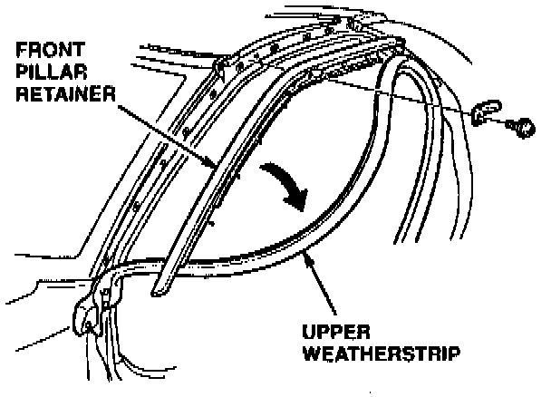
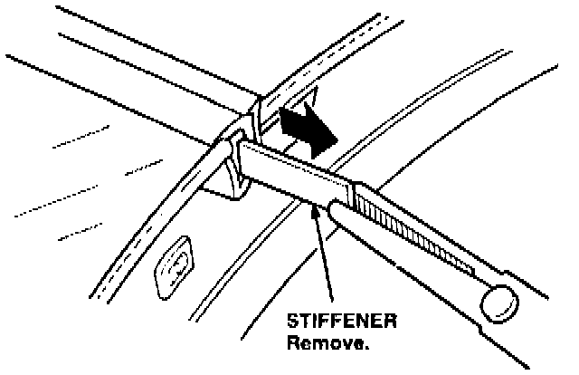
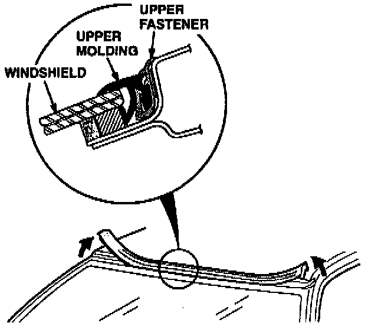
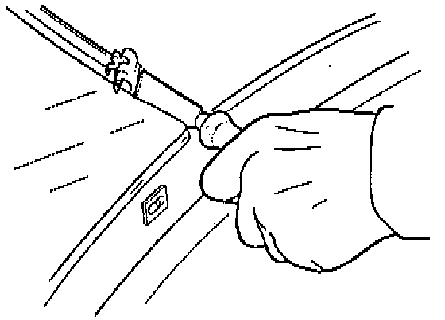
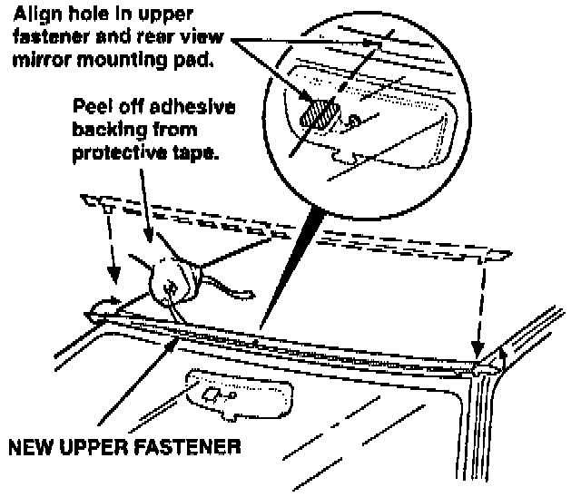
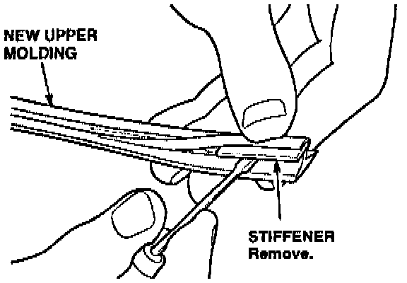
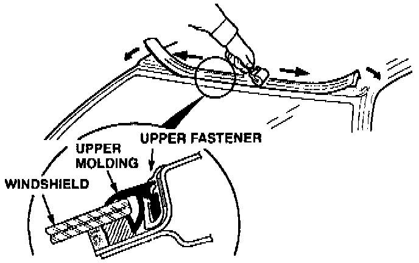
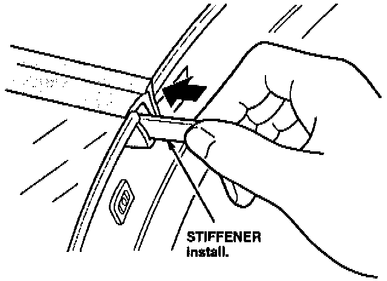

Upper Windshield Molding - Shrinks
December 20, 1994YEAR
1991-93
MODEL
NSX
VIN APPLICATION
ALL
BULLETIN NO.
93-013
Upper Windshield Molding Shrinks
(Supersedes 93-013, dated August 24, 1993)
PROBLEM
The upper windshield molding shrinks over time, leaving a gap on the outside edges.
CORRECTIVE ACTION
Replace the upper windshield molding with the improved molding listed under PARTS INFORMATION.
Upper Weather Strip Moulding:

1. Remove the front part of the upper weatherstrips. Remove the screws holding the front pillar retainers. Carefully slide the retainers forward to release them from the B pillar molding, then remove them from under the front fenders. [NEW]
Moulding Stiffener:

2. Use needle-nose pliers to remove the stiffener from each end of the upper windshield molding. [NEW]
Upper Molding Cross Section:

3. Remove the upper molding and upper fastener.

4. Thoroughly clean the remaining adhesive out of the recess where the fastener was removed. Clean at least 0.5 mm under the top edge of the windshield glass. [NEW]

5. Center the new fastener and attach it to the roof. [NEW]

6. Remove the stiffener from each end of the new molding. [NEW]

7. Use a rubber lubricant or dishwashing liquid to lubricate the new molding. Starting at the center and working out to the ends, install the new windshield molding by first placing it under the top edge of the windshield and then installing it into the molding fastener. Use a 1" wallpaper seam roller (available at any local paint store) to work the molding into the proper position in the fastener. Make sure the ends of the molding are installed properly under the top of the windshield. [NEW]

8. Slide the stiffeners removed in step 6 into the ends of the molding. Make sure they are under the glass. [NEW]
9. Install the front pillar retainers on both sides. Install the upper weatherstrips. Seal the front ends of the weatherstrips with black weatherstrip adhesive.
PARTS INFORMATION
Upper windshield molding: P/N 73151-SLO-023
Molding fastener: P/N 73152-SL0-013
WARRANTY CLAIM INFORMATION
In warranty:
The normal warranty applies.
Out of warranty:
Any repair performed after warranty expiration may be eligible for goodwill consideration by the District Technical Manager or your Zone Office. You must request consideration, and get a decision, before starting work.
Operation number: 824105
Flat rate time: 0.5 hour
Failed P/N: 73151-SL0-003
Defect code: 004
Contention code: A01